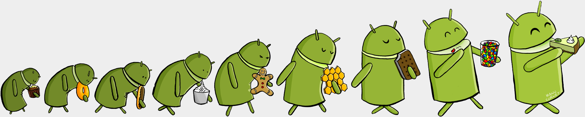
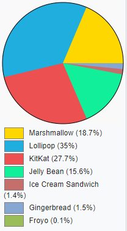

Розробка та версії
З моменту виходу першої версії у вересні 2008 року відбулося 40 оновлень системи. Ці оновлення, як правило, стосуються виправлення виявлених помилок і додавання нової функціональності в систему. Спочатку Google розраховувала давати версіями Android імена відомих роботів, але відмовилася через проблеми з авторськими правами. Кожна версія системи, починаючи з 1.5, отримує власне кодове ім'я на тему солодощів. Кодові імена присвоюються в алфавітному порядку латинського алфавіту. Починаючи з версії 3.1, і до 6.0 оновлення виходили раз у 6 місяців. На конференції Google I/O 2014 була представлена нова версія ОС Android під кодовою назвою «L». На даний момент випущено 12 версій системи.
Назви версій та % використання
- Android 1.0 «Apple Pie» - перша стабільна версія Android
- «'2.3.x»' («Gingerbread») 0.3 %
- «'4.0.x»' («Ice Cream Sandwich») 0.3 %
- «'4.1.x»' («Jelly Bean») 1.1 %
- «'4.2.x»' («Jelly Bean») 1.6 %
- «'4.3.x»' («Jelly Bean») 0.5 %
- «'4.4.x»' («KitKat») 7.8 %
- «'5.0.х»' («Lollipop») 3.6 %
- «'5.1.х»' («Lollipop») 14.7 %
- «'6.0.х»' («Marshmallow») 21.6 %
- «'7.0»' («Nougat») 19.0 %
- «'7.1.х»' («Nougat») 10.3 %
- «'8.0»' («Oreo») 13.4 %
- «'8.1»' («Oreo») 5.8 %
- «'9.0»' («Pie») <0.1 %